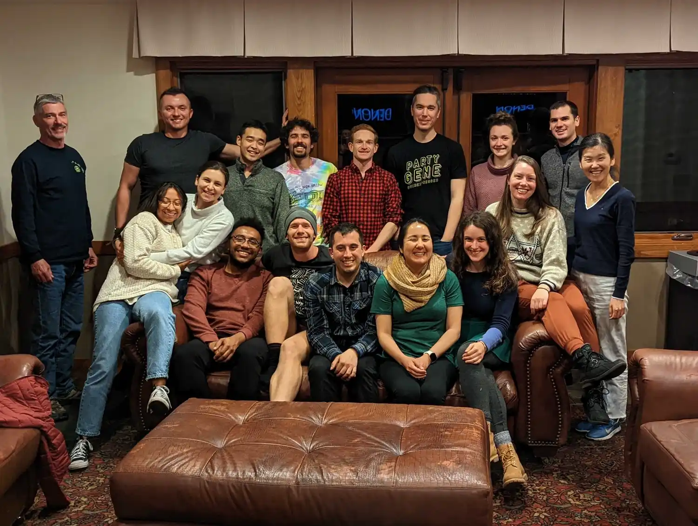
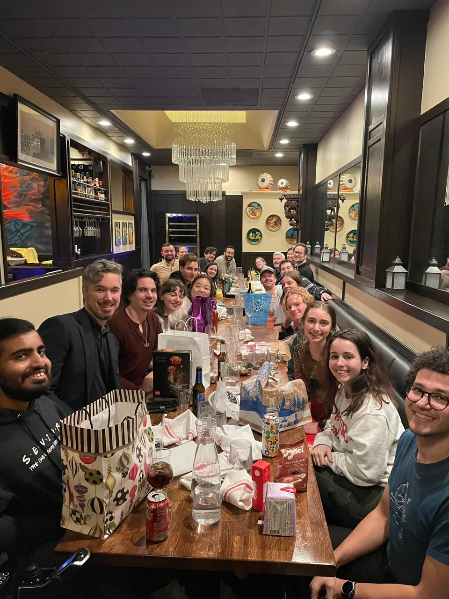
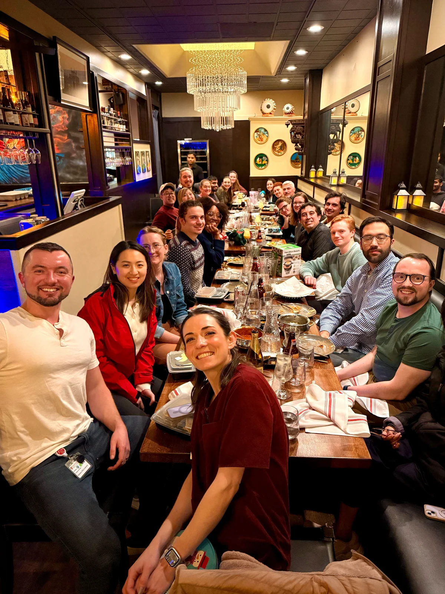

Stanford Medicine | Pathology + Genetics + Biomedical Data Science
From genetic variation to mechanism to diagnosis.
The Montgomery Lab studies how genetic variation shapes molecular phenotypes, cellular processes, and disease through functional genomics, rare-disease biology, computational genomics, and consortium-scale science.

Lab community
A group built around collaborative projects, close mentorship, and shared scientific momentum.

Lab culture
Work, conversation, and a room full of active scientific discussion.
Scientific profile
Genomics that moves from signal to mechanism to human relevance.
- Gene regulation, expression, splicing, and rare variants
- Rare disease interpretation and molecular diagnosis
- Consortium-scale atlases, tools, and translational genomics


Explore
Research directions, people, and shared resources.
Explore current research, the lab community, public resources, and major collaborative programs.
Signals
Scenes from the lab's science and community.
Consortia
Major collaborative programs shape the scale and reach of the lab's science.
These collaborations connect the lab to rare disease, exercise biology, precision medicine, and functional interpretation at scale.